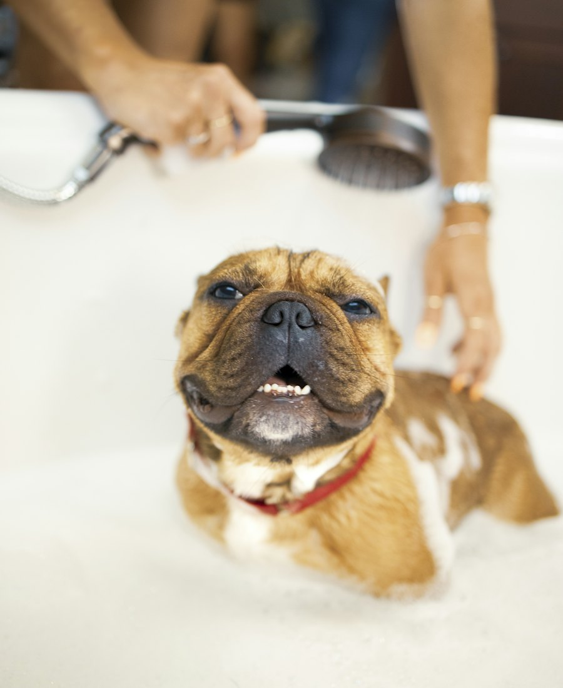
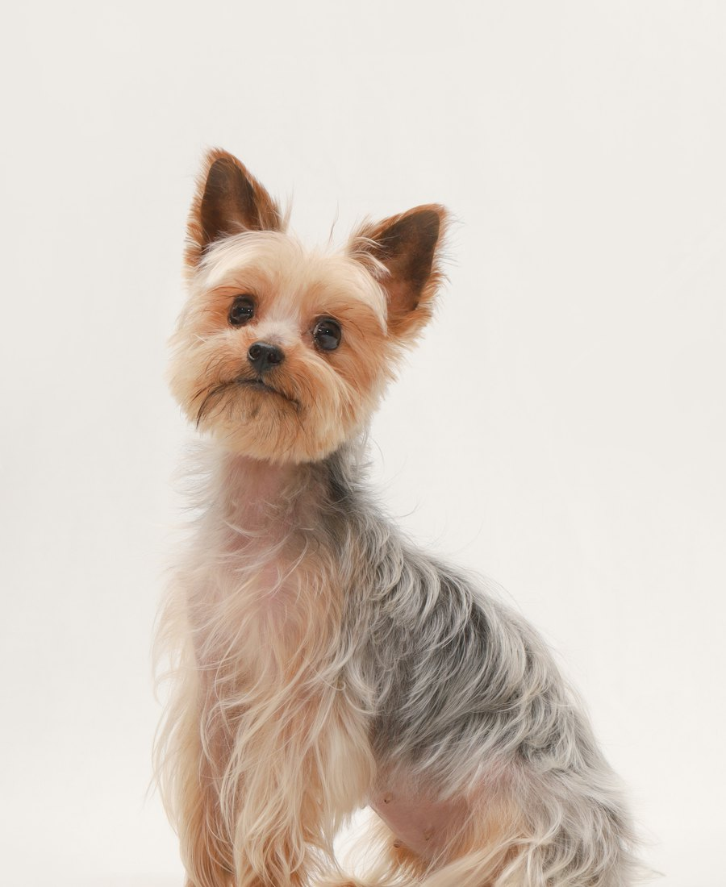
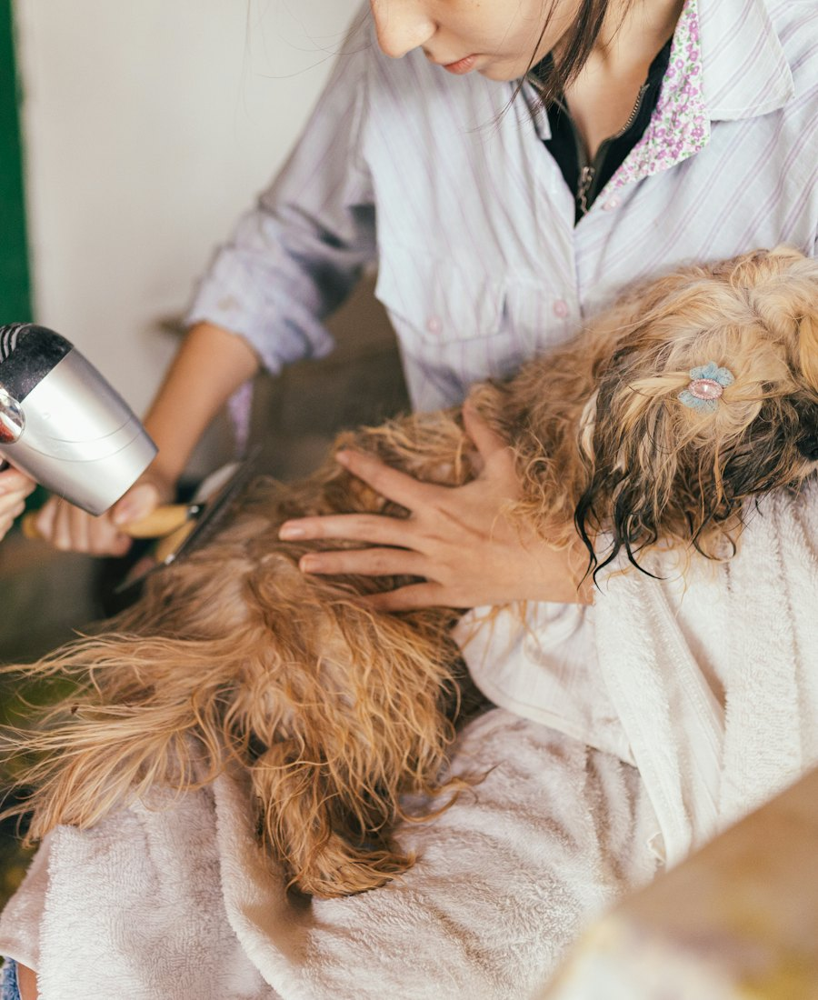
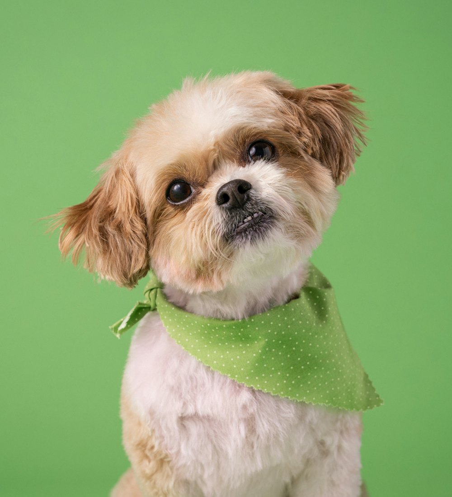
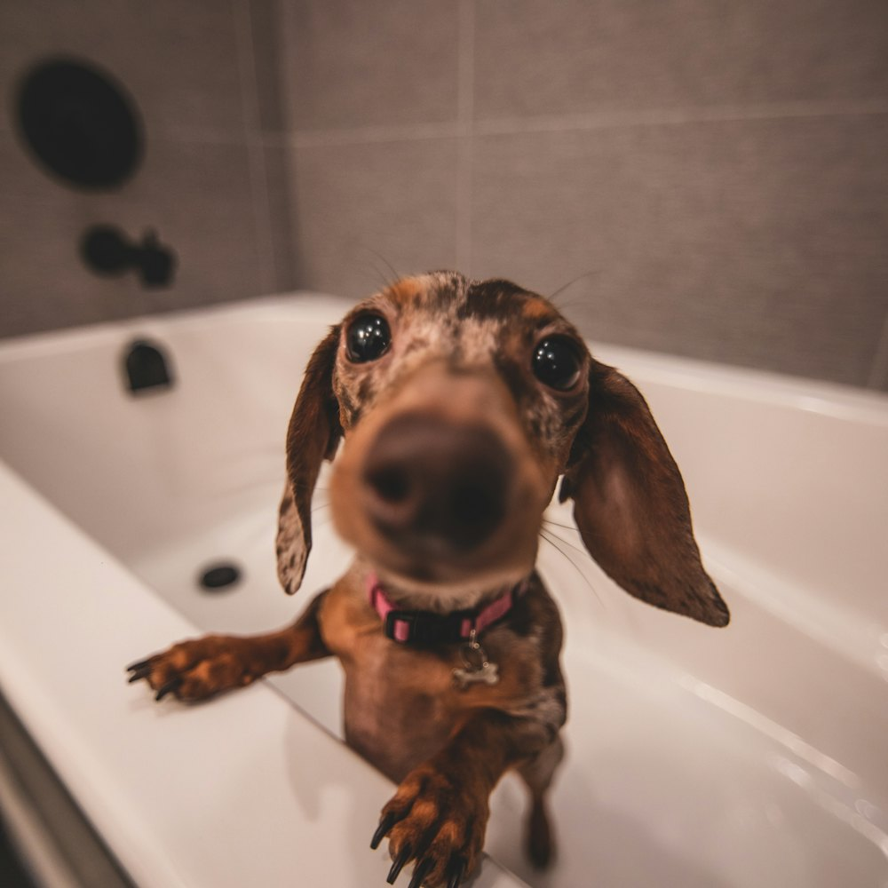

O que a Taty's Pet faz
Texto de exemplo. No site final entram os serviços e detalhes que a própria Taty's Pet oferece.

Banho
Shampoo, enxágue sem pressa e o pet devolvido cheiroso.

Tosa
Tosa no jeito que combina com o pelo e com a rotina do seu pet.

Secagem e escovação
Pelo bem seco e desembaraçado, para não ficar úmido nem embolado.
Fotos ilustrativas. No site final entram fotos dos pets atendidos pela Taty's Pet.
Próximo banho: …
Mandar para a TatySugestão geral para cães. A Taty confirma pelo WhatsApp o intervalo ideal para o seu pet e se o dia está livre.


Um pet de cada vez, com atenção de verdade
Texto de exemplo. No site final entra a história da Taty, como ela começou e fotos do espaço de banho e tosa.
- Atendimento combinado direto com a Taty pelo WhatsApp
- Banho sem correria, no tempo do seu pet
- Você recebe o pet de volta cheiroso e bem escovado
Itens de exemplo. A Taty ajusta para o que ela realmente oferece.
Quem leva o pet na Taty, recomenda.
100%de recomendação no Facebook
11avaliações de tutores
500curtidas na página, aproximadamente
No site final entram os comentários dos tutores que avaliaram a Taty's Pet.
Ver a página no FacebookOnde e quando
- Cidade
- Americana - SP
O endereço certinho a Taty passa pelo WhatsApp. - Horários
- Consulte pelo WhatsApp
- (19) 99286-6922
- Taty's Pet Banho & Tosa
Perguntas frequentes
Quanto custa o banho?
Depende do porte, do tipo de pelo e se vai ter tosa. Mande uma mensagem no WhatsApp e a Taty passa o valor certinho.
Qual o horário de atendimento?
Os horários são combinados pelo WhatsApp: (19) 99286-6922.
Onde fica?
Em Americana - SP. O endereço completo a Taty informa quando você agenda.
De quanto em quanto tempo o cachorro deve tomar banho?
Varia com o pelo e a rotina. Pelo curto costuma aguentar mais tempo; pelo longo e cachorro que brinca na terra pedem banhos mais frequentes. Use o calendário acima como ponto de partida e confirme com a Taty.